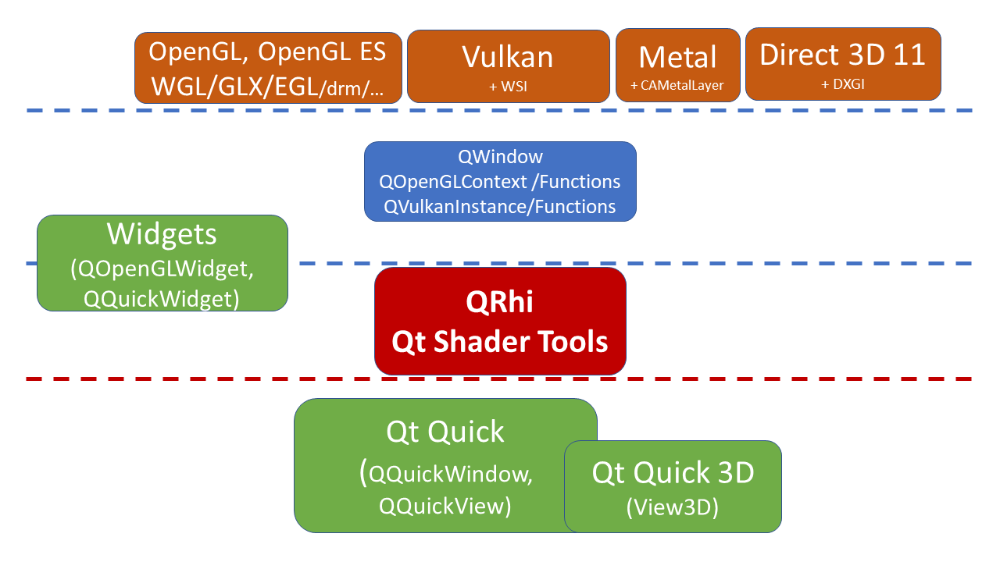
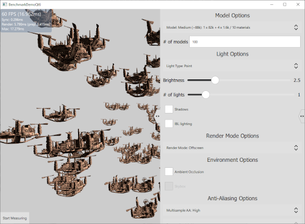
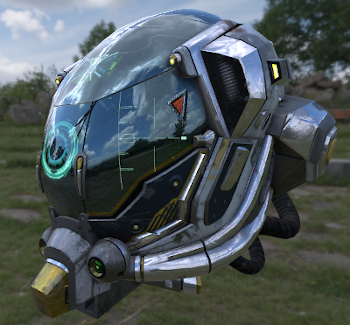

Graphics
Cross-platform applications can use Qt to display graphical elements. Qt abstracts the platforms' underlying graphics APIs so that developers can focus on the application code.

The Qt Rendering Hardware Interface (RHI) translates 3D graphics call from Qt applications to the available graphics APIs on the target platform.
The supported graphics APIs are:
- OpenGL (version 2.1 and higher)
- OpenGL ES (version 2.0 and higher)
- Vulkan (version 1.0 and higher)
- Direct3D 11 (version 11.1 and higher)
- Direct3D 12 (version 12.0 and higher)
- Metal (version 1.2 and higher)
Graphics in Qt Quick
Qt Quick applications use a scene graph for rendering. The scene graph renderer can create efficient graphics calls and increase performance. The scene graph is has an accessible API which gives you the flexibility to create complex but fast graphics.
The pages in the following list contain more information about rendering Qt Quick applications.
- Qt Quick Scene Graph
- Scene Graph and Rendering
- Qt Quick Scene Graph Default Renderer
- Extending the Scene Graph with QRhi-based and native 3D rendering - How to integrate application-provided graphics commands (OpenGL, Vulkan, Direct3D, etc.) into a Qt Quick scene graph.
Choosing a Rendering Path
Qt uses the target platform's graphics APIs whenever possible, however, it is possible to set up Qt's rendering path with a specific API. In many cases, choosing a specific API can increase performance and allows the developers to deploy on a platform that have a specific graphics API. Visit the Rendering via the Qt Rendering Hardware Interface page on how to set the render path in QQuickWindow.
3D Graphics with Qt Quick 3D
Qt Quick 3D is an add-on that provides a high-level API for creating 3D content and 3D user interfaces based on Qt Quick. It extends the Qt Quick Scene Graph which lets you implement 3D content on 2D Qt Quick applications.

Shader Effects
The Qt Shader Tools provides a tool, QSB, to translate vertex and fragment shaders into a package for Qt Quick interfaces. In particular, the ShaderEffect QML type and QSGMaterial subclasses can use the output of QSB. Qt Quick 3D has its own framework for importing shaders into 3D scenes.
The following list contains information about shader effects.
- Qt Shader Tools
- Programmable Materials, Effects, Geometry, and Texture data - materials and shaders in Qt Quick 3D

High-Level Graphics with Qt GUI
Qt GUI provides a high level windowing, painting, and typography system. QPainter provides an API for drawing vector graphics, text and images onto different surfaces, or QPaintDevice instances, such as QImage, QOpenGLPaintDevice, QWidget, and QPrinter. For Qt Widgets user interfaces, Qt uses a software renderer.
The following list contains information about Qt GUIs high-level drawing APIs.
Low-Level Graphics with Qt GUI
Qt GUI provides cross-platform enablers for managing OpenGL contexts and Vulkan instances. Applications that perform rendering directly with OpenGL, OpenGL ES, or Vulkan can use QOpenGLContext, QOpenGLFunctions, QVulkanInstance, QVulkanFunctions, and QVulkanDeviceFunctions to manage contexts, instances, and gain access to the OpenGL and Vulkan API functionsin a portable manner.
Qt GUI also offers the Qt Rendering Hardware Interface (RHI) family of APIs, such as QRhi and QShader, for applications that want to perform rendering using the portable, cross-platform 3D rendering infrastructure Qt itself uses to implement the Qt Quick scene graph and the Qt Quick 3D rendering engine. These classes are offered as "semi-public" APIs with a limited compatibility promise for the time being, similarly to the Qt Platform Abstraction classes. However, the QRhi classes come with full documentation. See the QRhi class to get started.
The Qt GUI module on its own allows targeting a QWindow or an offscreen buffer, such as a QRhiTexture, with the QRhi-based rendering. With user interfaces based on QWidget or QML (Qt Quick) working with a QWindow backed by a native platform is not always the most convenient way. This is why the Qt Widgets module offers QRhiWidget, whereas Qt Quick provides QQuickRhiItem. These base classes allow convenient creation of QWidget or QQuickItem subclasses, instances of which perform portable QRhi-based rendering into a texture that is then composited automatically with the Widgets or Qt Quick scene.
Qt OpenGL Module
The Qt OpenGL module is for applications that require OpenGL access. This module is to maintain compatibility with Qt 5 applications and with Qt GUI. For user interfaces that use QWidget, QOpenGLWidget is a widget that can add OpenGL scenes.
Printing
Qt supports printing both directly to actual printers, locally or on the network, as well as producing PDF output. How to do printing with Qt is described in detail on the Qt Print Support page.
Images
Qt supports convenient reading, writing, and manipulating of images through the QImage class. In addition, for more fine grained control of how images are loaded or saved, you can use the QImageReader and QImageWriter classes respectively. To add support for additional image formats, outside of the ones provided by Qt, you can create image format plugins by using QImageIOHandler and QImageIOPlugin.
See the Reading and Writing Image Files page for more information.